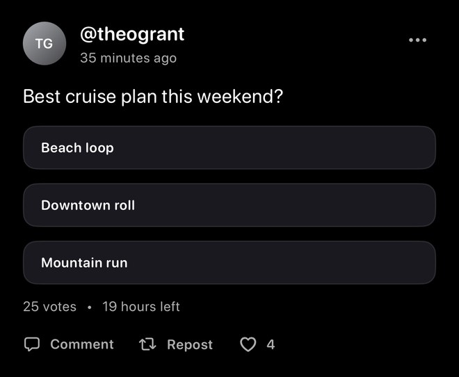
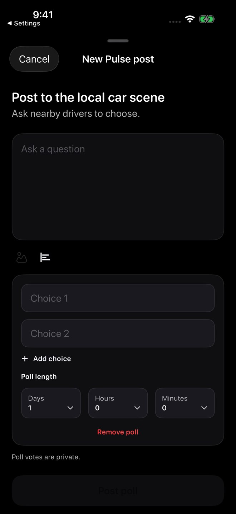
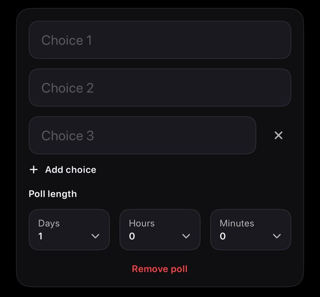
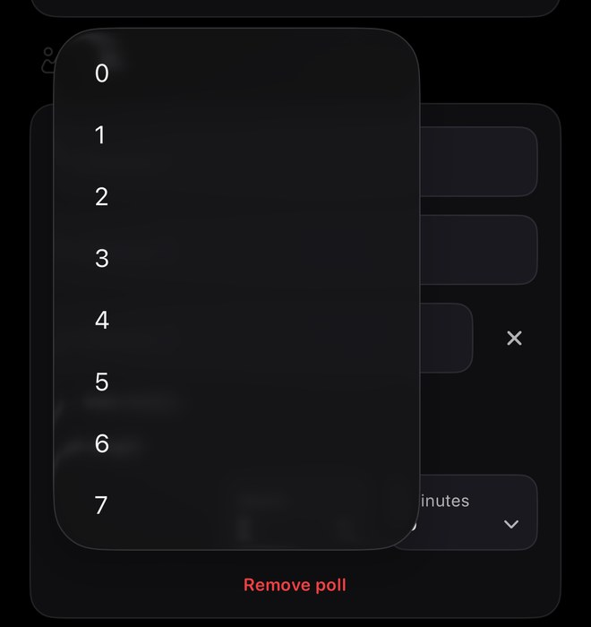

Screenshots show sample content from the Idle test drive in a prerelease build, version 1.3.0 (1), using Dark appearance and Alpine White. Your app may look different. Learn about the test drive.
Read an open poll
Open Home → Pulse to find polls in the feed. A poll can show its question, answer choices, vote count, and time remaining.
Read the question and choose carefully. Pulse polls are designed for one vote per account while the poll is open.

Create a question and choices
- Open Pulse from Home.
- Tap the pencil compose button for New Pulse post.
- Choose the poll icon to show Ask a question and two initial choice fields.
- Enter a clear question and distinct answer choices.
The photo icon is dimmed in this captured poll state. Current Pulse polls cannot be combined with photo posts or public meet cards.

Add or remove an extra choice
Tap Add choice when the question needs another answer. An added choice has an × control for removing it.
Keep the options easy to tell apart. Use Remove poll if you want to return to a text post instead.

Review the poll length
Use Poll length to review the Days, Hours, and Minutes selectors. Check the question, choices, and duration before choosing Post poll.
The Days menu shown here offers values from 0 through 7. The captured form used its existing one-day value; the other duration menus and validity limits were not tested.
The composer says Poll votes are private. The screenshot records that wording, rather than demonstrating how vote privacy is enforced.

Troubleshooting
- Poll will not postCheck that the question and choices are clear and complete.
- Cannot vote againPulse polls are designed for one vote per account.
- Poll closedClosed polls can show final results instead of accepting new votes.
Publication, repeat-vote rejection, final results, and privacy enforcement were not tested in these local Demo examples.
Contact support
Email support@idlemeets.com if a poll behaves unexpectedly or shows content that should be reviewed.